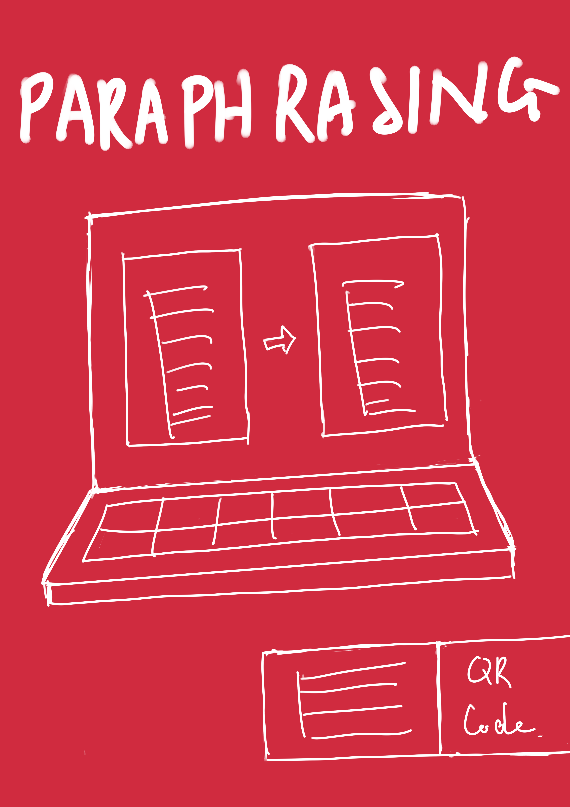
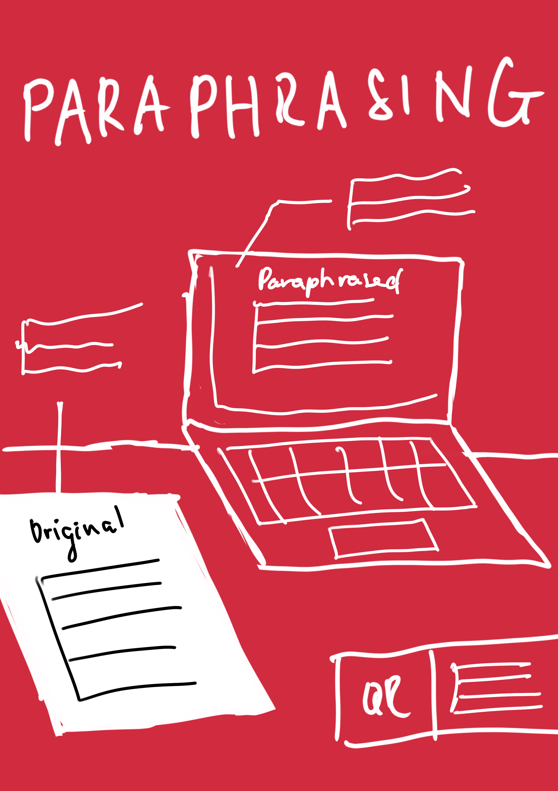
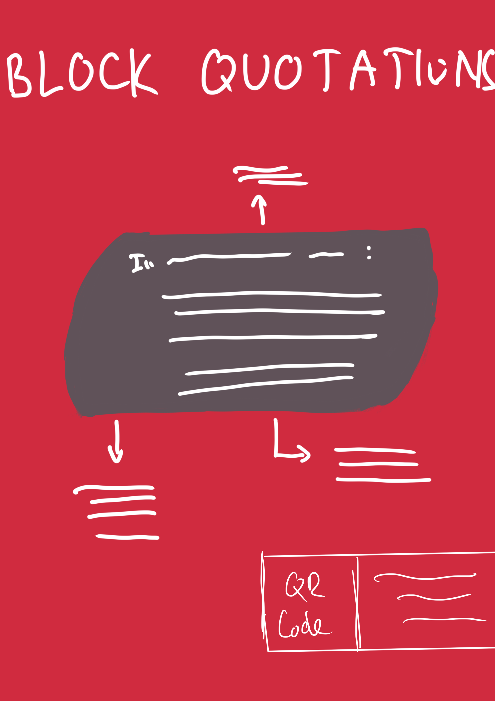
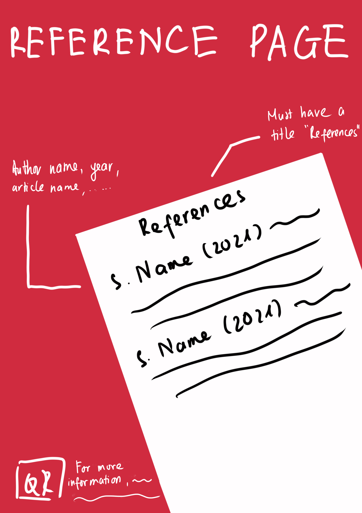
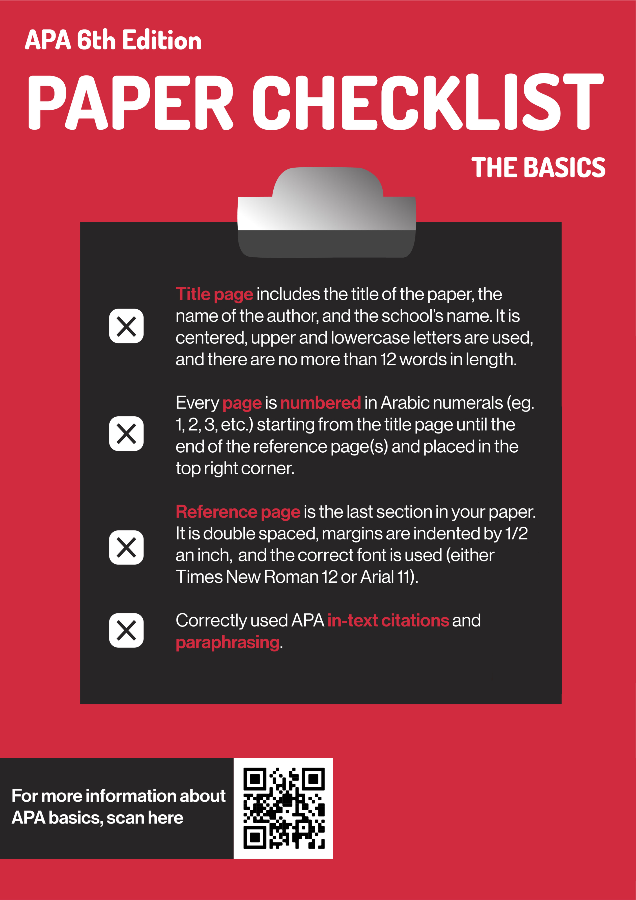

Plagiarism Poster Campaign
Graphic Design / Visual Design / School Project
A poster campaign that informs students the basic principles of APA citation cite and how to cite correctly.

×

My Role
- Graphic Designer
- Visual Designer
- Ideation
Team
- Jason Tran
- Morgan Emsley
- Michelle Cho
- Denisa Marinescu
Duration
- 4 weeks - Spring 2021
Why Poster Campaign?
This project was from a lower-devision writing course. Plagiarism occasionally occurs at universities although some students do not intend to plagiarize. In creating a set of informative posters, we aimed for providing students at SFU (Simon Fraser University) with a guide to avoiding plagiarism.
Key Findings
To get insights into how students think they would fall into plagiarism, we conducted a survey and got 12 answers from SFU students. Most students believe they have a high potential to plagiarize in their first year due to their inexperience with citation styles like APA or MLA.
With APA 6 being one of the most used referencing formats at SFU, we decided that our poster campaign would focus on the most used aspects of APA 6: paper formatting, paraphrasing, direct quotations, block quotations, and the references page.
Getting into Design
Because our main audiences were SFU students, we wanted to use colours that are similar to SFU’s colour palette for brand consistency. To create an eye-catching design, we used contrast colours: dark red as background colour and white for our header's colour.
Red
#D12940
RGB: 209, 41, 64
Black
#272526
RGB: 39, 37, 38
White
#FFFFFF
RGB: 255, 255, 255
We wanted a san-serif font as we aimed for a simple and minimalist design. Nunito typeface was chosen for the headers due to its round strokes, which bring a soft touch to the poster. Therefore, the design won’t be a strict guide but a more friendly and engaging guide. For the body text, we used Roboto for readability because of its uniform and thin stroke widths.
Our goal is to turn the posters into quick guides to APA 6, so we used graphics as informative examples, arrows to highlight key details, and QR codes that lead to resources with in-depth information for each topic. These decisions ensure our posters would remain effective when placed together or displayed alone.
Ideation, Sketching and Iterations
As one of two artists in the group, I was responsible for the sketches of Block Quotation, Paraphrasing and Reference Page posters. I used Procreate to sketch because I love how digital sketch let me see if the combination of colors works or not. For the graphics, I decided to use every object like a laptop or an actual reference paper to make the design more engaging with the audience.




We created the mock-ups and iterations in Photoshop and continued to improve the first mock-ups by giving feedback. During this process, we wanted a cohesive design by keeping the same format for all posters, so we move all the QR codes to the right side.
FIRST MOCK-UP
ITERATION AFTER FEEDBACK
Reflection
Through this project, I learned how to efficiently contribute my ideas and feedback to a group by showing how. I also enjoyed working with my teammates as I got to see how different ideas and perspectives brought the designs to a final decision.